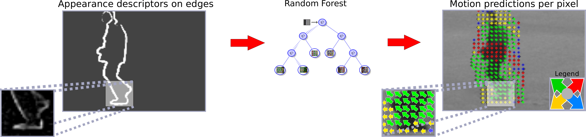

This paper proposes motion prediction in single still images by learning it from a set of videos. The building assumption is that similar motion is characterized by similar appearance. The proposed method learns local motion patterns given a specific appearance and adds the predicted motion in a number of applications. This work (i) introduces a novel method to predict motion from appearance in a single static image, (ii) to that end, extends of the Structured Random Forest with regression derived from first principles, and (iii) shows the value of adding motion predictions in different tasks such as: weak frame-proposals containing unexpected events, action recognition, motion saliency. Illustrative results indicate that motion prediction is not only feasible, but also provides valuable information for a number of applications.
♦ S.L. Pintea, J. C. van Gemert, A. W. M. Smeulders. Dejavu: Motion Prediction in Static Images. In European Conference on Computer Vision (ECCV), 2014
♦ http://github.com/SilviaLauraPintea/DejaVu
*If you use this code, please cite the paper.